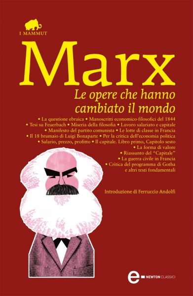
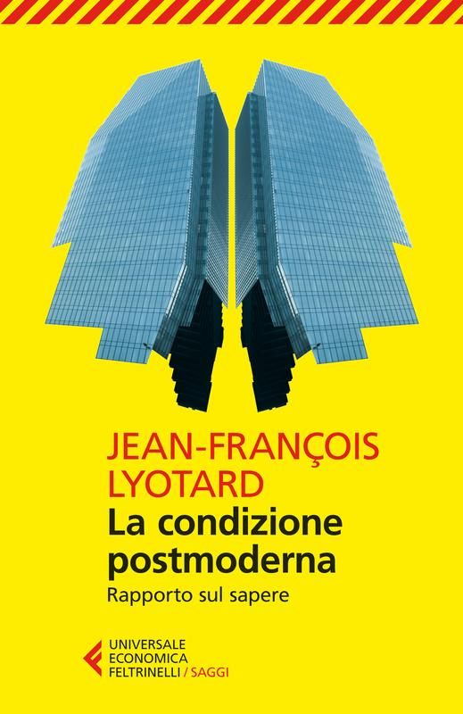
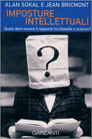
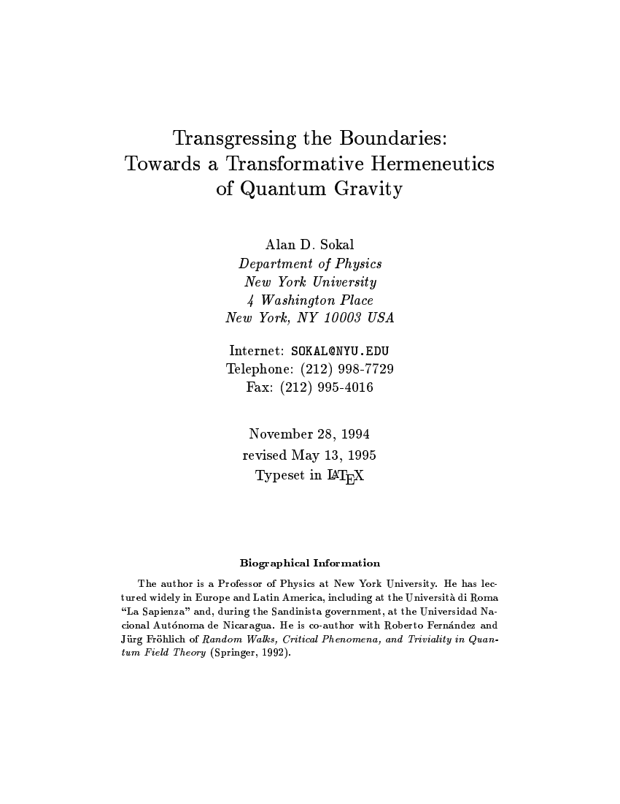
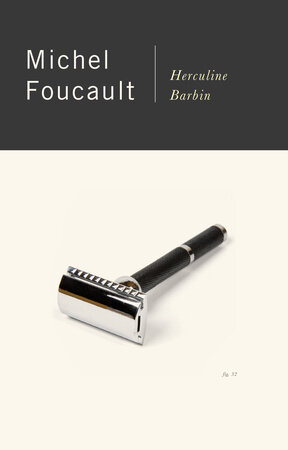

23:51 · 7 OPERE
Informazione o disinformazione di qualità?
Il filo del discorso
La discussione delle politiche contro la disinformazione diventa una riflessione sul rapporto fra autorità pubblica, mezzi di comunicazione e autonomia del giudizio. Dr Divago contesta l’idea di selezionare fonti di qualità senza chiarire i criteri e richiama interventi della Casa Bianca e del Surgeon General Vivek Murthy. Il ragionamento passa dall’economia e dalle libertà costituzionali al confronto con Marx e Kant sul potere delle idee e sull’uso del proprio intelletto. La parte conclusiva critica il postmodernismo attraverso Lyotard, la beffa di Sokal e Bricmont e il richiamo di Foucault alla vicenda di Herculine Barbin. Sono prospettive e accostamenti del relatore, presentati come argomenti di una polemica culturale e politica.
I libri nel discorso
Confronting Health Misinformation: The U.S. Surgeon General’s Advisory on Building a Healthy Information Environment
Identificazione probabile
Copertina del rapporto istituzionale: U.S. Department of Health and Human Services · rapporto istituzionale · 2021
Copertina autentica di un rapporto pubblico HHS del 2021, riprodotta dalla copia ufficiale GPO con sigillo di autenticazione. Non è una copertina libraria né il titolo della frase citata.
Vivek Murthy e la frase sullo sforzo dell’intera società sono richiamati; frase riscontrata a p. 7 del rapporto HHS del 2021. Titolo completo non annunciato, identificazione probabile.
Passaggio 5:01 ↗ · Fonti e libro ↗
Tesi su Feuerbach
Copertina della raccolta che comprende le Tesi su Feuerbach: Newton Compton · Le opere che hanno cambiato il mondo · ebook · 2013
Copertina dell’ebook della raccolta Newton Compton, distinta dal volume cartaceo con altro ISBN. L’editore elenca esplicitamente le Tesi fra i contenuti. Non è l’edizione impiegata nel filmato.
Marx e Tesi su Feuerbach sono nominati prima della parafrasi dell’undicesima tesi.
Passaggio 15:06 ↗ · Fonti e libro ↗
Risposta alla domanda: che cos’è l’Illuminismo?
Identificazione probabile
Copertina della raccolta che comprende il saggio sull’Illuminismo: Firenze University Press · Sette scritti politici liberi · 2011 · a cura di Maria Chiara Pievatolo
Copertina del volume cartaceo FUP che comprende il saggio, riscontrato dal catalogo universitario. L’ISBN appartiene alla raccolta; il filmato non annuncia un’edizione e il titolo del saggio è un’identificazione probabile della citazione.
Kant e la massima sul servirsi del proprio intelletto senza la guida di altri sono richiamati; probabile identificazione del saggio del 1784, titolo non pronunciato.
Passaggio 17:15 ↗ · Fonti e libro ↗
La condizione postmoderna. Rapporto sul sapere
Identificazione probabile
Copertina: Feltrinelli · Universale Economica Saggi · 2014 · traduzione di Carlo Formenti
Immagine autentica dell’opera, controllata visivamente; l’edizione di riferimento non è attribuita al filmato.
Lyotard e il suo testo sul postmoderno sono richiamati con titolo approssimato; identificazione probabile.
Passaggio 20:50 ↗ · Fonti e libro ↗
Imposture intellettuali. Quale deve essere il rapporto tra filosofia e scienza?
Identificazione probabile
Copertina: Garzanti · Saggi blu · 1999 · traduzione di Fabio Acerbi e Monica Ugaglia
Immagine autentica dell’opera, controllata visivamente; l’edizione di riferimento non è attribuita al filmato.
Sokal, Bricmont e un loro testo sono nominati nel contesto della beffa su Social Text; titolo completo non annunciato, identificazione probabile.
Passaggio 21:02 ↗ · Fonti e libro ↗
Transgressing the Boundaries: Towards a Transformative Hermeneutics of Quantum Gravity
Identificazione probabile
Frontespizio del preprint dell’articolo parodico: Social Text · 46/47, pp. 217–252 · 1996 · immagine del preprint 1994, revisione 1995
Frontespizio autentico del preprint dell’autore: 28 novembre 1994, revisione 13 maggio 1995. Non è la copertina di un libro né la prima pagina della veste tipografica di Social Text. Il testo è una parodia dichiarata, non un articolo da usare per apprendere fisica.
La beffa di Sokal, la rivista e il tema della gravità quantistica sono annunciati; il titolo bibliografico completo è un’identificazione probabile.
Passaggio 21:24 ↗ · Fonti e libro ↗
Herculine Barbin dite Alexina B.
Identificazione probabile
Copertina dell’edizione inglese delle memorie presentate da Foucault: Vintage · Herculine Barbin · edizione inglese · 1980
Copertina autentica dell’edizione inglese Vintage, ISBN 9780394738628. Il nome di Foucault in copertina indica il presentatore del dossier; le memorie sono di Herculine Barbin. Titolo e specifica edizione non sono annunciati nel filmato: l’associazione resta probabile.
Foucault, la domanda sul vero sesso e la storia di Herculine Barbin identificano probabilmente il dossier e la sua introduzione, non un titolo esplicitamente pronunciato.
Passaggio 22:17 ↗ · Fonti e libro ↗